Agent mode: multi-step composition with Gemini 2.5 Flash — creating tracks, setting tempo, inserting notes
Real-world examples showing what MidiPilot can do. Each prompt below has been tested with actual AI models. Copy them, adapt them, or use them as inspiration for your own creations.
Generate full compositions from a single prompt
Transform, transpose, quantize, and restructure
Add chords, analyze progressions, reharmonize
Orchestrate, add instruments, revoice parts
Clean up MIDI files, fix channels, reorganize
Convert for Final Fantasy XIV Bard Performance
This example demonstrates MidiPilot’s Agent mode at full power — composing a complete multi-track arrangement from a single prompt using Gemini 2.5 Flash.
Create a metal version of Mozart’s Eine kleine Nachtmusik with shredding guitars, bass, strings, and a drum kit. Make it 20 measures long, with a guitar solo in the middle.
The AI executes multiple tool calls iteratively — creating tracks for each instrument, setting tempo to 160+ BPM, inserting note patterns, and building the arrangement step by step. The status bar shows real-time progress with tool call counts.

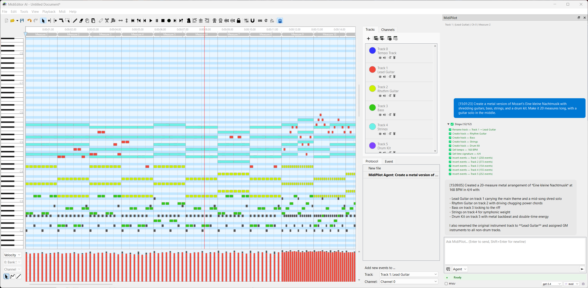
Watch the complete agent run from prompt to finished composition:
Hear the result — the MIDI output played back through GM instruments:
After the initial composition, a follow-up prompt adds a shredding guitar solo in the middle section:
Another follow-up prompt enriches the arrangement with additional harmony parts:
MidiPilot can compose full pieces from scratch. Be specific about tempo, key, instruments, length, and style for best results.
Compose a 4-bar piano melody in C major at 120 BPM
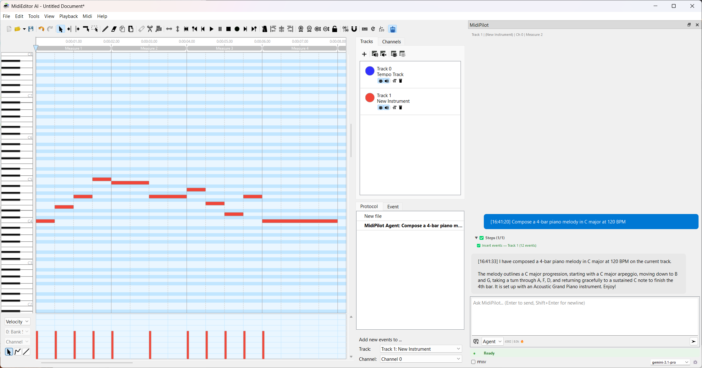
Create an 8-bar jazz waltz in Bb major with piano, upright bass, and brushed drums. Use a I-vi-ii-V progression.
Write a 16-bar lo-fi hip hop beat at 85 BPM with jazzy piano chords, a mellow bass, and vinyl-style drums. Add a Rhodes pad for atmosphere.
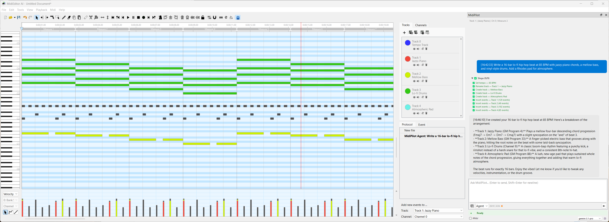
Compose a 12-bar Baroque-style invention for two voices (right hand and left hand) in D minor. Use counterpoint with imitation at the octave.
Create a retro 8-bit game soundtrack: 16 bars at 140 BPM in E minor with a square-wave lead melody, arpeggiated chords, and a simple bass line. Use channels 0-2.
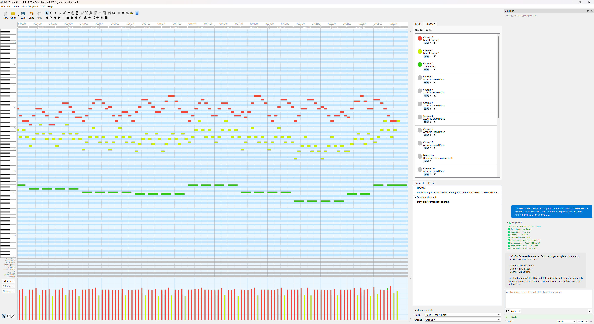
Transform existing MIDI data with natural language. MidiPilot can read the current file state and apply targeted modifications.
Transpose all notes on Track 1 up by a perfect fifth
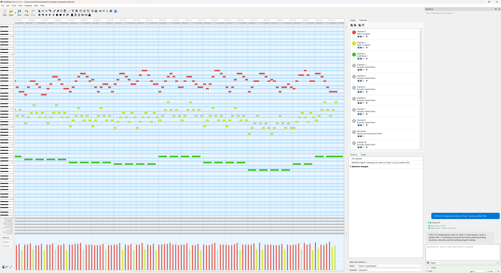
Set all note velocities on the drum track to 100, except hi-hats which should be 70
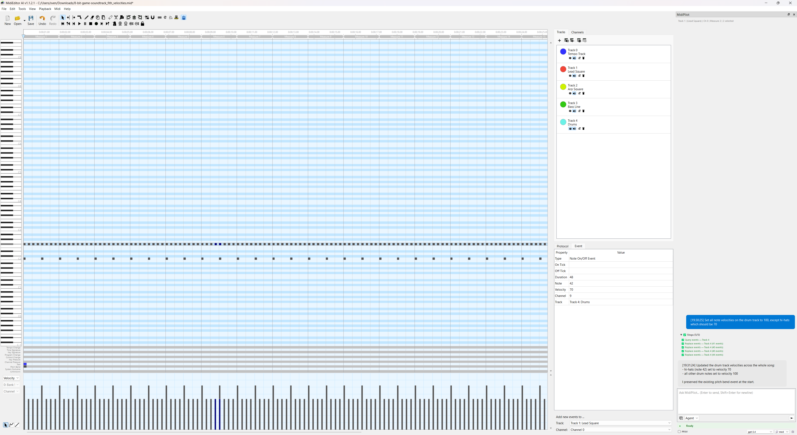
Copy measures 1-4 and paste them at measure 9. Then copy measures 5-8 and paste at measure 13 to create an AABB form.
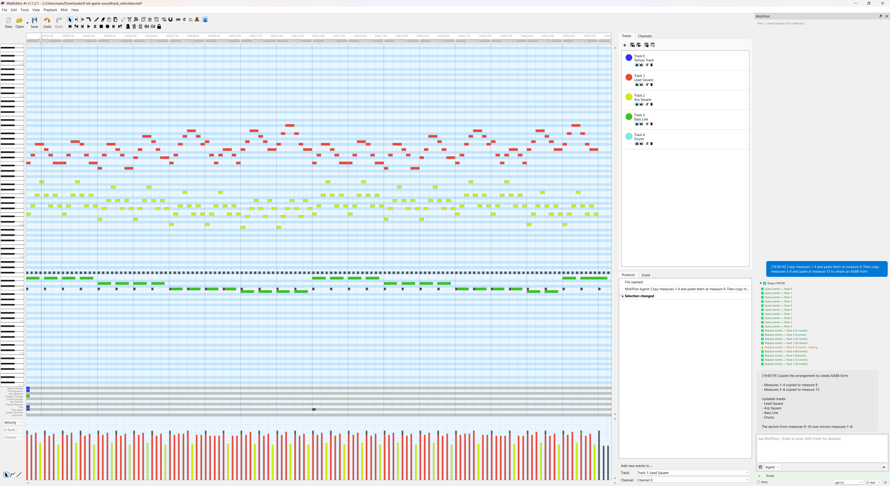
Add slight timing and velocity variations to the piano part to make it sound more human. Keep it subtle — no more than ±10 ticks and ±15 velocity.
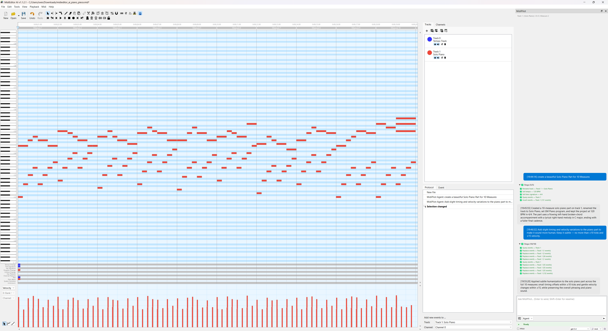
The melody on Track 1 is 8 bars. Extend it to 16 bars by developing the existing motifs — vary the rhythm and add passing tones in the second half.
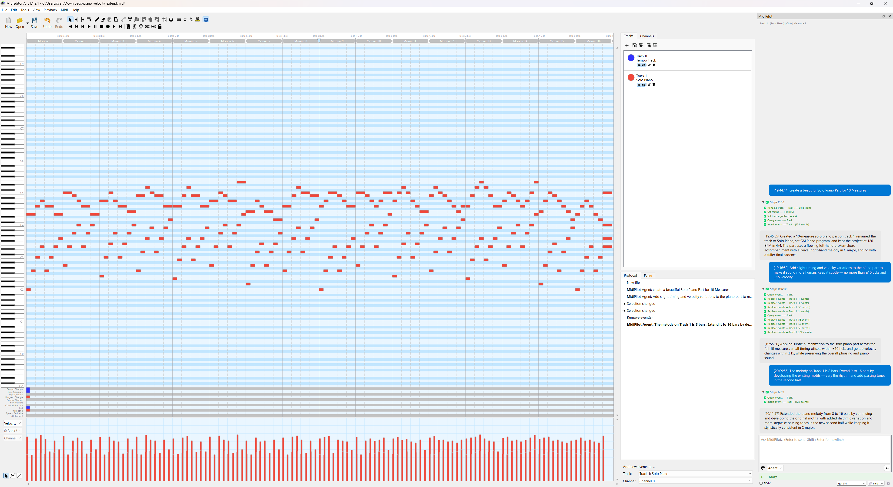
Let the AI analyze your music and add harmonically correct parts.
Analyze the chord progression on the piano track and tell me the roman numeral analysis in the key of G major
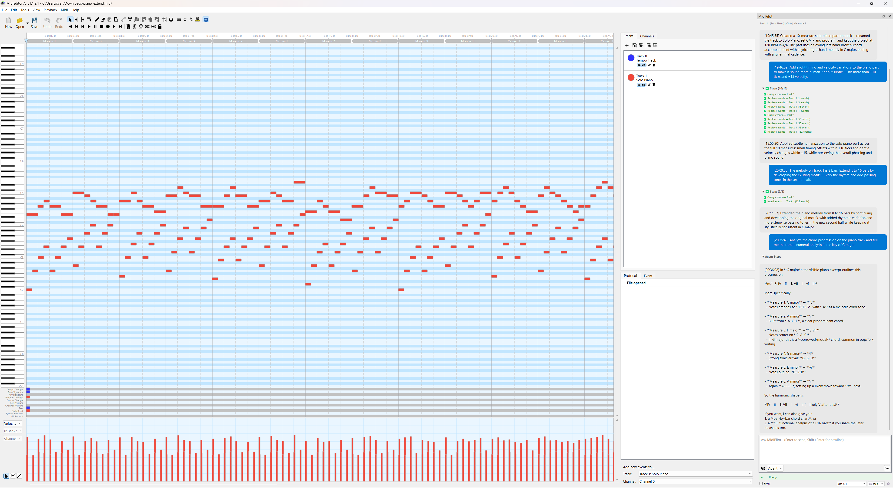
Add block chords to accompany the melody on Track 1. Use a new track called "Chords" on Channel 1. Follow standard voice leading.
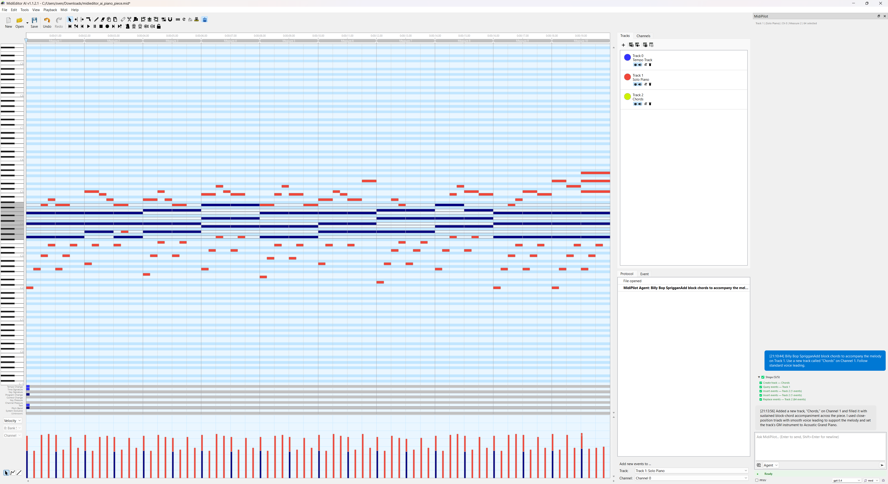
Reharmonize the melody using jazz substitutions — try tritone subs, chromatic approach chords, and secondary dominants where appropriate
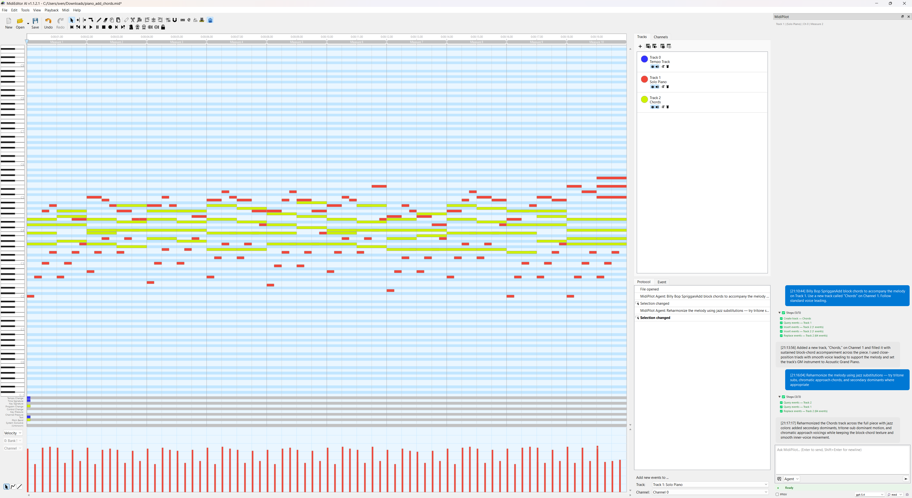
Write a countermelody for the existing melody on Track 1. Put it on a new track, stay in the same key, and use contrary motion where possible.
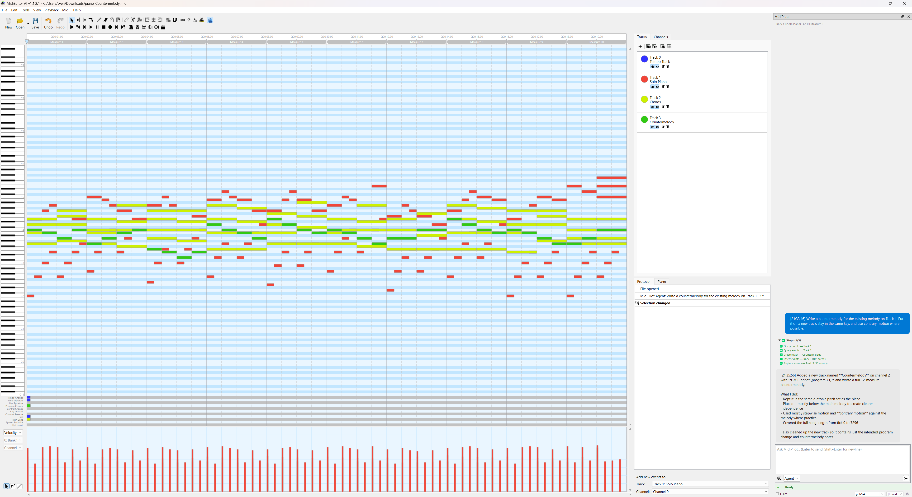
Build up arrangements from existing parts or create full orchestrations.
Add a walking bass line on a new track following the chord progression of the piano part. Use Channel 1 with acoustic bass (Program 32).
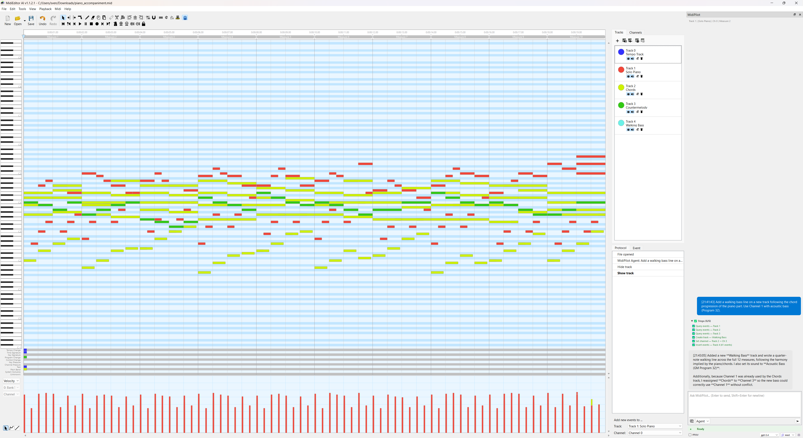
Create a drum track on Channel 9 with a standard rock beat: kick on 1 and 3, snare on 2 and 4, hi-hat eighths. Add a crash on beat 1 of every 4th measure.
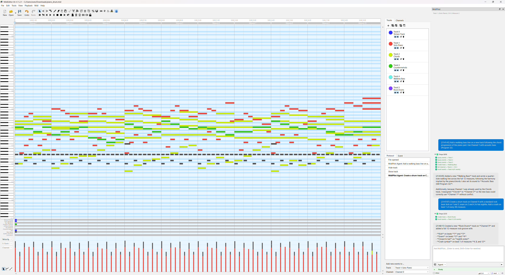
Take the piano melody on Track 1 and orchestrate it for strings: violins play the melody, violas play a harmony a third below, cellos play a simplified bass line, and double bass plays pedal tones on the root.
Convert this classical piece into a bossa nova arrangement. Change the tempo to 130 BPM, add a bossa rhythm guitar pattern, a syncopated bass, and a light drum groove.
Fix, reorganize, and clean up MIDI files.
Move all notes from Channel 0 to Channel 2, and reassign the drums from Channel 5 to Channel 9
This file has all notes on a single track. Split them into separate tracks by channel — one track per channel, named by their GM instrument.
Remove all notes shorter than 10 ticks (ghost notes) and delete any empty tracks
Clamp all notes to the range C2–C7. Transpose any notes outside this range by octaves until they fit.
Enable the FFXIV checkbox before sending these prompts. MidiPilot will enforce Final Fantasy XIV Bard Performance rules: C3–C6 range, monophonic, max 8 tracks, tonal drum mapping.
Convert this song into FFXIV Bard Performance Octet. Please add the following instruments: Flute, Violin, Harp, Lute, Piano, Snare Drum, Bass Drum, Cymbal.
Compose an 8-bar FFXIV bard-ready piece in A minor with harp melody, lute chords, and flute countermelody
Validate this file for FFXIV compliance and fix any issues you find